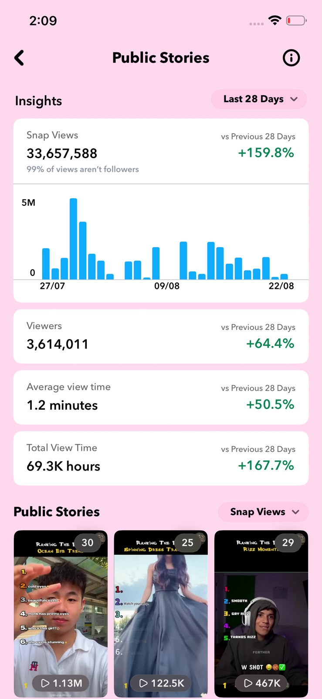
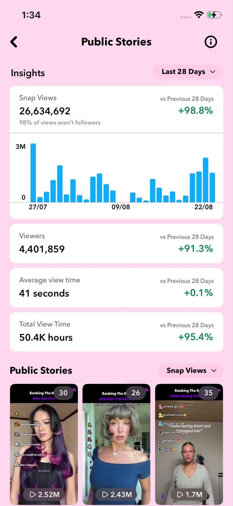
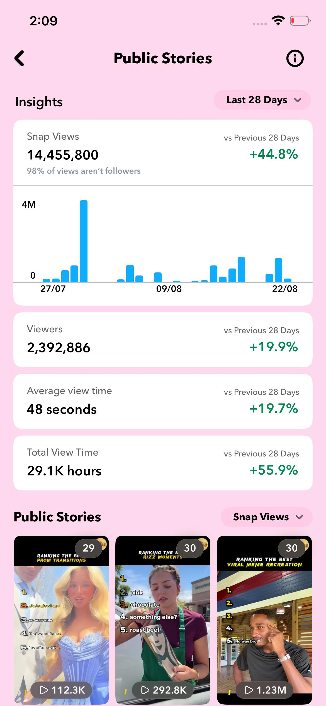
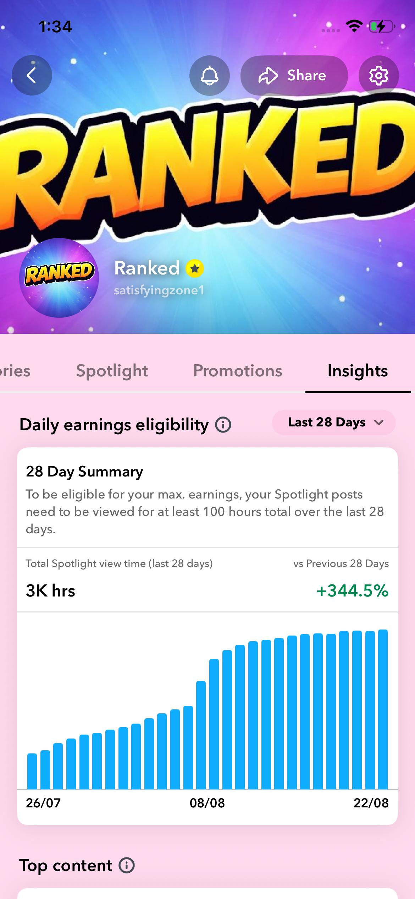
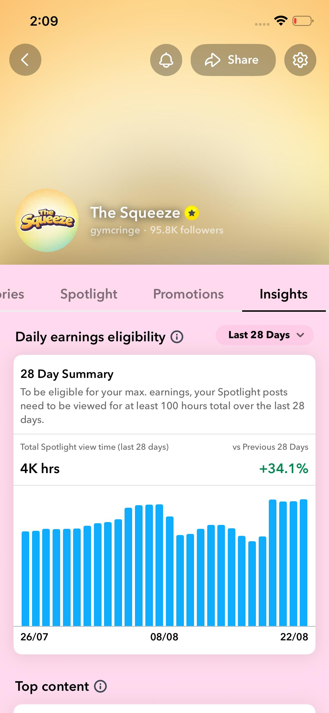
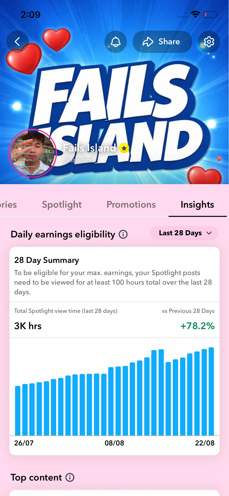

Scaling Digital Presence Through Data-Backed Storytelling & High-Retention Video.
I help brands, high-growth startups, and media channels capture audience attention, monetize short-form distribution, and leverage generative AI for modern visual production.

Documented Campaign Growth & Analytics
Direct operational data and channel performance metrics from accounts managed, produced, and optimized by me. Select any card for full data examination.
33.6M+ Campaign Impressions
Achieved organic distribution through audience retention loops, averaging 1.2 minutes of continuous view duration per story sequence.

26.6M+ Organic Distribution
Individual stories surpassed 2.52M and 2.43M views via structured narrative hooks and high-contrast editorial pacing.

14.4M+ Story Impressions
Consistent month-over-month view volume expansion with 98% of total views driven through algorithmic non-follower discovery.

Ranked Show — +344.5% Lift
Revamped publishing schedule and audio-visual hook sequencing to qualify for top-tier daily creator earnings program.

The Squeeze — 95.8K Audience
Niche-targeted content curation and cultural meme adaptations maintaining an active, engaged follower community.

Fails Island — +78.2% Lift
Optimized comedic timing and pattern-interrupt sound effects to sustain high retention across short-form feeds.
Strategic Solutions for Modern Media Growth
Comprehensive production, channel management, and generative AI workflows tailored for ambitious brands and digital creators.
Video Editing
Shorts, Reels, and Spotlight videos engineered for high audience retention, fast hook capture, and visual clarity.
- Reels
- YouTube Shorts
- Snapchat Videos
- Long-Form Videos
- Before / After Editing
- Story-Based Edits
- Captions & Subtitles
- Transitions & Effects
Social Media Management
Full-scope channel leadership: structured editorial planning, publishing workflows, and engaged community growth.
- Content Calendar
- Page & Channel Handling
- Posting & Scheduling
- Caption Writing
- Hashtag Strategy
- Audience Research
- Insights & Tracking
- Community Engagement
AI Advertising & Product Content
Leveraging next-generation generative AI tools to produce high-impact product commercials, virtual models, and realistic visuals.
- AI Product Advertisements
- AI Product Video Generation
- Product Promotional Reels
- AI Commercial Concepts
- Product Photography Visuals
- AI Voiceovers (ElevenLabs)
- AI-Generated Models & Scenes
- Multi-Format Creative Assets
AI Social Media Creatives & Posters
Thumb-stopping feed aesthetics, high-performing carousels, campaign banners, and branded social assets tailored to your identity.
- Instagram Posts
- Promotional Posts
- Campaign Creatives
- Product Posts
- Event & Launch Posters
- Story Designs
- Carousel Posts
- Brand Visual Identity
The Long-to-Short Content Multiplier
I convert a single 45-minute YouTube video, podcast, or presentation into 10–15 high-retention micro-assets without requiring more time recording.
Master Video
Podcast, webinar, keynote, or 30–60 minute deep-dive recording.
Hook & Retention Mining
AI transcript analysis to isolate the top 10 highest-retention moments and talking points.
Precision Short Editing
Vertical framing, kinetic typography, b-roll overlays, sound design, and pattern interrupts.
10–15 Viral Micro-Assets
Reels, Shorts, TikToks, and Spotlight videos published to multiply compound reach.
Factify — Media Literacy Through Social Gamification
Combating the spread of digital misinformation among youth in Pakistan through interactive Instagram gamification, verified research, and UN SDG alignment.
Transforming Media Verification into an Interactive, Habit-Forming Experience
Digital Misinformation in Youth Feeds
Social media platforms in Pakistan are flooded with sensational headlines and forwarded claims. Traditional awareness efforts rely on dry lectures and lengthy articles that digital audiences routinely disregard.
- Core Vulnerability: High exposure without systematic fact-checking habits.
- Target Group: College and university students across major Pakistani urban centers.
- Objective: Build critical evaluation skills through proactive cognitive inoculation.
Gamified Decision Mechanics on Instagram
Rather than lecturing, Factify placed participants in the seat of a news investigator. Real headlines, memes, and social posts were presented with instant "Real or Fake" decision choices.
- Instant Feedback Loops: Clear rationale provided immediately after every quiz response.
- Bilingual Accessibility: Delivered in Urdu and English for inclusive national impact.
- Targeted Visual Identity: Trust-building Blue with Golden Yellow attention alerts.
Strategic Alignment with UN Sustainable Development Goals
Factify operationalizes digital media research to directly support international global targets:
Lean Budgeting & Creative Operations
Executed on a minimal, student-friendly operating budget of PKR 12,000/month, illustrating that compelling creative strategy delivers outsized engagement over high budgets.
Generative AI & Video Editing Stack
A production pipeline that pairs human editorial intuition with bleeding-edge AI models for maximum speed and cinematic quality.
Generative AI Video
AI Visuals & Asset Staging
AI Voice & Sound Design
Post-Production & Editing
Research, Scripting & Platform Analytics
Background & Track Record
Experience spanning media networks, broadcast newsrooms, high-volume digital publishers, and AI technology startups.
Maaz Saqib
Media Strategist, High-Retention Video Editor & AI Content Director
I specialize in bridging high-velocity short-form creative editing with algorithmic audience retention frameworks and modern generative AI tools. Currently directing daily video production and trend curation at 42 Media, producing 30+ videos weekly while consulting for global creators and digital brands.
Content Researcher & Video Editor
I research trending short-form topics, viral hooks, and meme culture. I edit and produce 30+ high-retention short videos per week using Filmora and CapCut, implementing structured retention and monetization frameworks.
Freelance Social Media Strategist & Content Manager
I design comprehensive social media growth blueprints. I manage publishing calendars, audience engagement workflows, and performance analytics to increase reach and brand trust across platforms.
Content Creator & Video Producer
Produced 90+ videos across TikTok and Instagram promoting ResearchPal.co. Formulated platform-specific scripts and visual strategies to drive student awareness and product adoption.
Social Media Intern
Supported digital publishing schedules, tracked engagement KPIs, and assisted campaign reporting for corporate clientele.
Media Executive Intern
Coordinated media communication tasks and supported strategic execution. Assisted digital and broadcast messaging initiatives, contributing directly to structured national media planning and distribution processes.
Production Assistant Intern
Assisted live and recorded television broadcast production operations. Operated studio equipment under rigorous newsroom standards and coordinated with editorial and technical teams for seamless daily programming.
Let’s Discuss Your Content Strategy
Whether you need high-volume viral short-form editing, full-service social channel management, or cutting-edge AI commercial assets, I am ready to deliver measurable outcomes.
“Let's turn your content into viral reach and measurable brand growth.”
Project Inquiry
⚡ 24h ResponseShare brief details to initiate a project proposal or arrange a discovery chat.